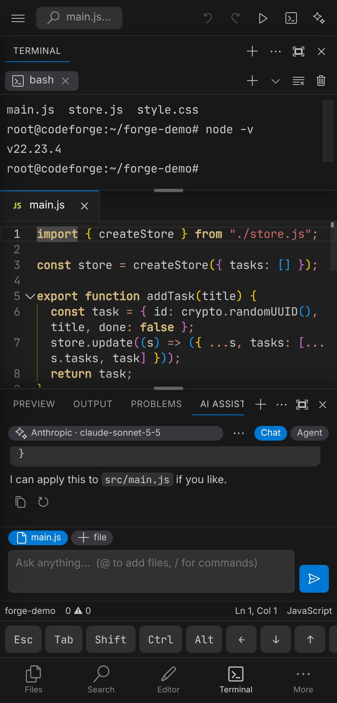

Write code where you are
CodeForge is a code editor with a real terminal, Git, live preview and AI assistants. Use it as an Android app or straight from your browser: same editor, same shortcuts.
No account needed. In the browser your files stay in the browser; in the app they stay on your device.

Three ways in
Pick the one that fits. They share the same interface, so what you learn in one works in the others.
Use it in the browser
Nothing to install. Create or import a project, edit, search, use Git, run HTML, React and TypeScript projects in a live preview, and chat with an AI model. Add it to your home screen to use it like an app.
Open the web editorInstall the Android app
Adds what a browser cannot: a full Linux terminal with Node, Python and Git, a live server, access to your device's files, and previews that cannot take the editor down.
Get the appRead and build the code
CodeForge is open source (MIT). Browse the Kotlin and JavaScript here, download the source, or build the APK yourself with one command.
Browse the sourceBuilt for a small screen first
Everything below runs in the app today. Pick a topic to see it.
Web or Android: what you get
A browser cannot run Linux programs or listen on ports, so the web editor leaves those out. Everything else is the same code.
| Web editor | Android app | |
|---|---|---|
| Editor, search, themes, snippets | Yes | Yes |
| Where files live | In your browser (export a ZIP to keep them) | On your device, visible in the Files app |
| Terminal | A small built-in shell | Full Linux with node, npm, python, git |
| Live server and preview | Live server in the browser: HTML, CSS, JS, React (JSX) and TypeScript, with live reload. Packages load from esm.sh. | Live reload in a separate crash-proof window, and real dev servers such as Vite and Next |
| Git | Yes, clone through a CORS proxy | Yes, plus git in the terminal |
| AI assistants | Yes, with your own API key | Yes, keys kept in the Android Keystore |
| Extensions | Themes, icons, snippets, light code extensions | Same |
| Works offline | After the first visit, when added to the home screen | Yes |
Questions
Is it free?
Yes. CodeForge is MIT licensed. The AI features need an API key from the provider you choose, and that provider's pricing applies.
Do I need an account?
No. There is no CodeForge account. Your projects and settings stay in your browser or on your device.
Where do my API keys go?
In the Android app they are stored in the Android Keystore and added to requests natively. In the web editor they are stored in your browser, so use the app for anything sensitive.
Why does the app ask for access to all files?
So you can open any folder on your device as a project, like a desktop editor. You can also use the system file picker and skip that permission.
Will it be on Google Play?
That is planned. Until then, download the APK from the download page and allow installs from your browser or file manager.